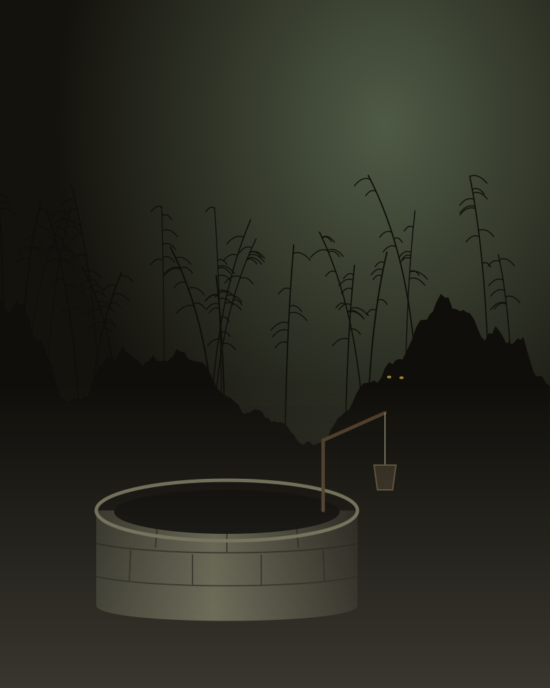

Tin tức
-
Trang chính thức của Cracking Bread Studio đã mở.
-
Đất Độc (Evil Hometown) đang trong giai đoạn phát triển. Thông tin mới sẽ được đăng tại đây.
-
Bắt đầu viết tài liệu thiết kế game (GDD). Bản chơi thử dạng concept prototype đang được sửa lỗi.
-
Ý tưởng về Đất Độc bắt đầu hình thành.

Đất Độc Evil Hometown
Một người con xa quê trở về ngôi làng ven sông ở đồng bằng Bắc Bộ. Mọi thứ dường như vẫn vậy: lũy tre, bờ đê, cái giếng đầu ngõ, và những lời người già dặn nhau về những giờ không được ra đồng.
Nhưng làng có những chuyện không ai kể cho hết. Càng đi sâu, bạn càng hiểu rằng mảnh đất này nhớ mọi thứ, và nó vẫn đang chờ được trả.
- Thể loại
- Kinh dị khám phá, góc nhìn thứ nhất
- Nền tảng
- PC
- Engine
- Unreal Engine 5
- Trạng thái
- Đang phát triển · concept prototype
Ý tưởng
Bước vào làng bằng đôi mắt của mình
Bạn đi, nhìn và nghe ở góc nhìn thứ nhất, tự ghép những mảnh chuyện rời rạc mà dân làng để lại.
Nỗi sợ của làng quê Việt
Cảm hứng từ tín ngưỡng dân gian và những điều kiêng kỵ ở nông thôn Bắc Bộ, những chuyện ai cũng từng nghe nhưng chẳng ai nói rõ.
Rợn người, không giật mình
Không hù dọa bằng tiếng động đột ngột. Nỗi sợ đến từ không khí, âm thanh, và những điều game cố tình không giải thích.
Cracking Bread Studio
Cracking Bread Studio là studio game indie một người, làm những trò chơi bắt đầu từ những câu chuyện của quê nhà. Dự án hiện tại là Đất Độc.
- Người sáng lập & phát triển
- bánh mì chuột
- Khởi đầu
- Tháng 7/2026
- Liên hệ
- bread-team@bread-studio.com
Làm game cùng Claude
Là studio một người, Cracking Bread Studio dùng Claude của Anthropic như một cộng sự xuyên suốt quá trình phát triển Đất Độc.
Concept thiết kế ban đầu
Phác thảo và phát triển các concept thiết kế ban đầu cho game.
Game Design Document
Xây dựng tài liệu thiết kế game (GDD), bắt đầu từ tháng 10/2026.
Asset prototype
Tạo asset prototype cho các bản chơi mẫu.
Hệ thống agent (đang xây dựng)
Một hệ thống nhiều agent chạy trên Claude API, được thiết kế để vận hành trọn vẹn pipeline phát triển game theo quy trình Agile Scrum.